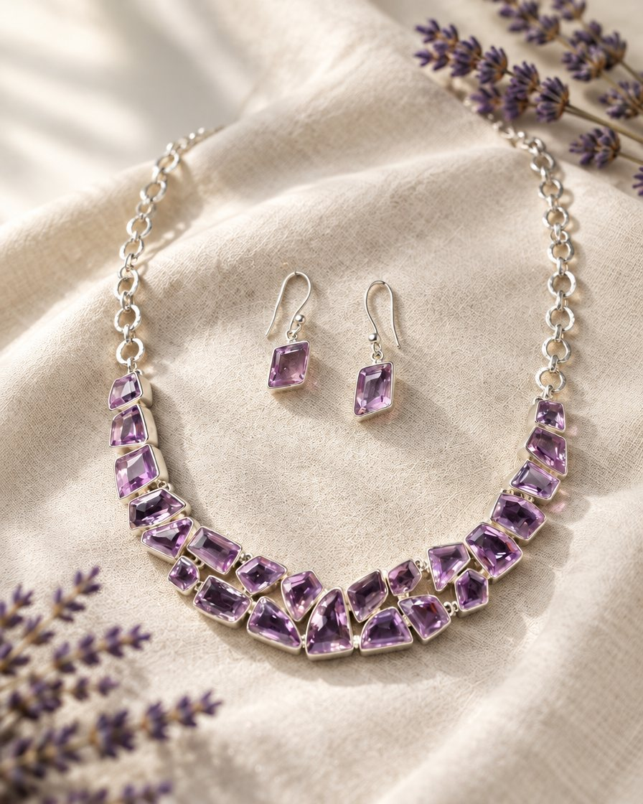

Zoekwoorden per thema
Amethist en edelsteen
| amethist ketting | 250 |
| geboortesteen februari | 900 |
| geboortesteen ketting | 600 |
| edelsteen ketting | 450 |
| edelsteen sieraden | 450 |
| amethist oorbellen | 150 |
| sieraden set | 600 |
| statement ketting | 900 |
Cadeau voor haar
| kerstcadeau vrouw | 5.500 |
| cadeau voor vrouw | 1.100 |
| cadeau vrouw 50 jaar | 250 |
| sieraden cadeau vrouw | 30 |
| cadeau voor mijn vrouw | – |
| ketting cadeau vrouw | – |
Cadeau voor moeder
| cadeau moeder | 2.600 |
| cadeau voor moeder 60 jaar | 40 |
| cadeau moeder 65 jaar | – |
| kerstcadeau moeder | – |
| sieraad voor moeder | – |
Black Friday (27-30 nov)
| black friday sieraden | 150 |
| sieraden black friday | 150 |
| black friday ketting | – |
| cyber monday sieraden | – |
Zo zien de zoekadvertenties eruit
Google amethist ketting
GesponsordAamara-sieraden.nl › mozaiek-set
Echte Amethist in 925 Zilver | Mozaïek Set: Collier+Oorbellen | Amara
Collier en oorbellen met echte amethist, elke steen met de hand in massief zilver gezet. Met certificaat en in een fluwelen geschenkdoos.
Echte amethistAndere stenenReviews 4,9/5
Google kerstcadeau vrouw
GesponsordAamara-sieraden.nl › cadeau
Het Cadeau Waar Ze Stil van Wordt | Echte Amethist | Amara
Geen andere vrouw heeft deze set: elke steen met de hand geslepen. In een fluwelen doos met jouw kaartje. Morgen in huis.
Als cadeauRuilen tot 31 janGravure
Google cadeau moeder
GesponsordAamara-sieraden.nl › cadeau
Wat Ze Zelf Nooit Zou Kopen | Amethist Set voor Mama | Amara
Echte amethist in massief zilver. Zacht lila past bij alles wat ze draagt. Ingepakt met jouw kaartje, ruilen kan altijd.
Voor mamaReviews 4,9/5Maten en details
Google black friday sieraden
GesponsordAamara-sieraden.nl › black-friday
Black Friday: Amethist Set -35% | Alleen t/m 30 Nov | Amara
De Mozaïek Set Amethist met 35% korting en de geschenkdoos gratis. Nog 38 sets in deze actie, op = op.
Black Friday -35%Geschenkdoos gratisAndere stenen
Shopping
Gesponsord · Shopping-resultaten
 Amara Mozaïek Set Amethist · 925 zilver€ 247amara-sieraden.nl · ★ 4,9Was € 329
Amara Mozaïek Set Amethist · 925 zilver€ 247amara-sieraden.nl · ★ 4,9Was € 329
Mozaïek Collier Amethist 45 cm€ 224amara-sieraden.nl · ★ 4,9Echte amethist Mozaïek Oorbellen Amethist€ 37amara-sieraden.nl · ★ 4,9Nikkelvrij
Mozaïek Oorbellen Amethist€ 37amara-sieraden.nl · ★ 4,9Nikkelvrij Mozaïek Duo: set + armband€ 319amara-sieraden.nl · ★ 4,9Oorknopjes gratis
Mozaïek Duo: set + armband€ 319amara-sieraden.nl · ★ 4,9Oorknopjes gratis Mozaïek Set Rozenkwarts€ 224amara-sieraden.nl · ★ 4,9Was € 299
Mozaïek Set Rozenkwarts€ 224amara-sieraden.nl · ★ 4,9Was € 299 Mozaïek Set Blauwe Topaas€ 262amara-sieraden.nl · ★ 4,9Was € 349
Mozaïek Set Blauwe Topaas€ 262amara-sieraden.nl · ★ 4,9Was € 349YouTube en Performance Max per avatar
Eén assetgroep per avatar. Google toont dezelfde video's, beelden en teksten op YouTube, Discover, Gmail en Shopping.
PMax Cadeau voor haar
Avatar 1. Landingspagina: salespagina #cadeau.
YouTube Shorts
AAmara Sieraden Gesponsord
Dit is het cadeau waar ze stil van wordt.
Bekijk de setYouTube-app
 0:10
0:10
0:10A
Geen andere vrouw heeft deze set
Gesponsord · Amara Sieraden
Bekijk de setGoogle Discover
Google
Zoeken
Laat haar weer even sprakeloos zijn. Echte amethist in massief zilver.
Gesponsord · Amara Sieraden
Bekijk de setGmail · Promoties
☰ Zoeken in e-mail
Promoties
A
AdvertentieAmara Sieraden
Het cadeau waar ze stil van wordt
Elke steen met de hand geslepen.
Haar mooiste cadeau ooitCollier en oorbellen in een fluwelen geschenkdoos.
Bekijk de set
Bekijk de set
Koppen (max. 30 tekens)
- Ze Wordt Er Stil Van
- Geen Andere Vrouw Heeft Deze
- Echte Amethist in 925 Zilver
- Fluwelen Geschenkdoos
- Met Certificaat
Lange koppen (max. 90)
- Geen andere vrouw heeft deze set: elke amethist met de hand geslepen en gezet
- Laat haar weer even sprakeloos zijn. Collier en oorbellen in massief zilver
Zoekthema's
- kerstcadeau vrouw
- cadeau voor mijn vrouw
- sieraad cadeau vrouw
- luxe cadeau vrouw
- amethist ketting
Doelgroepsignalen
- Bezoekers salespagina #cadeau
- Mannen 35-65, in-market sieraden
- Life event: jubileum
- Klantenlijst (uitsluiten)
PMax Zichzelf trakteren
Avatar 2. Landingspagina: salespagina #jezelf.
YouTube Shorts
AAmara Sieraden Gesponsord
Jij verdient echte stenen. Geen bijoux.
Bekijk de setYouTube-app
 0:10
0:10
0:10A
Geen bijoux. Een erfstuk.
Gesponsord · Amara Sieraden
Bekijk de setGoogle Discover
Google
Zoeken
Het stuk waar iedereen naar vraagt. Echte amethist in massief zilver.
Gesponsord · Amara Sieraden
Bekijk de setGmail · Promoties
☰ Zoeken in e-mail
Promoties
A
AdvertentieAmara Sieraden
Jij verdient echte stenen
Geen bijoux, maar echte amethist.
Geen bijoux. Een erfstuk.Massief zilver dat je jaren draagt en ooit doorgeeft.
Bekijk de set
Bekijk de set
Koppen (max. 30 tekens)
- Jij Verdient Echte Stenen
- Geen Bijoux. Een Erfstuk.
- Echte Amethist in 925 Zilver
- Het Stuk Waar Men Naar Vraagt
- Elk Jaar Gratis Gepoetst
Lange koppen (max. 90)
- Jij verdient echte stenen: de Mozaïek Set Amethist in massief 925 zilver
- Geen bijoux maar een erfstuk. Collier en oorbellen die je jaren draagt
Zoekthema's
- zilveren ketting dames
- statement ketting
- edelsteen sieraden
- luxe ketting
- zilveren sieradenset
Doelgroepsignalen
- Bezoekers salespagina #jezelf
- Vrouwen 40-62, affiniteit luxe en mode
- Zoekers op statement ketting
- Klantenlijst (uitsluiten)
PMax Liefhebber van stenen
Avatar 3. Landingspagina: salespagina #steen.
YouTube Shorts
AAmara Sieraden Gesponsord
Echte amethist. Geen twee stenen gelijk.
Bekijk de stenenYouTube-app
 0:10
0:10
0:10A
Elke steen anders geslepen
Gesponsord · Amara Sieraden
Bekijk de stenenGoogle Discover
Google
Zoeken
De geboortesteen van februari, op zijn mooist. Met echtheidscertificaat.
Gesponsord · Amara Sieraden
Bekijk de stenenGmail · Promoties
☰ Zoeken in e-mail
Promoties
A
AdvertentieAmara Sieraden
Echte amethist, met certificaat
Geen glas of kunststof.
Geen twee stenen gelijkElke amethist los geslepen en met de hand gezet in 925 zilver.
Bekijk de stenen
Bekijk de stenen
Koppen (max. 30 tekens)
- Echte Amethist Ketting
- Geen Twee Stenen Gelijk
- Met Echtheidscertificaat
- Geboortesteen Februari
- Met de Hand Gezet
Lange koppen (max. 90)
- Echte amethist, elke steen los geslepen en met de hand in 925 zilver gezet
- De geboortesteen van februari, op zijn mooist. Collier en oorbellen
Zoekthema's
- amethist ketting
- amethist sieraden
- geboortesteen februari
- edelsteen ketting
- amethist oorbellen
Doelgroepsignalen
- Bezoekers salespagina #steen
- Interesse: edelstenen, mineralen, yoga
- Zoekers op amethist
- Klantenlijst (uitsluiten)
PMax Cadeau voor moeder
Avatar 6. Landingspagina: salespagina #cadeau.
YouTube Shorts
AAmara Sieraden Gesponsord
Het sieraad dat ze zelf nooit zou kopen.
Bekijk de setYouTube-app
 0:10
0:10
0:10A
Mama verdient ook iets van echt
Gesponsord · Amara Sieraden
Bekijk de setGoogle Discover
Google
Zoeken
Het sieraad dat ze zelf nooit zou kopen, maar wél elke dag draagt.
Gesponsord · Amara Sieraden
Bekijk de setGmail · Promoties
☰ Zoeken in e-mail
Promoties
A
AdvertentieAmara Sieraden
Mama verdient iets van echt
Echte amethist in massief zilver.
Wat ze zelf nooit zou kopenZacht lila en zilver passen bij alles. Ingepakt met jouw kaartje.
Bekijk de set
Bekijk de set
Koppen (max. 30 tekens)
- Mama Verdient Iets van Echt
- Wat Ze Zelf Nooit Zou Kopen
- Echte Amethist in 925 Zilver
- Lila en Zilver Past Altijd
- Met Jouw Kaartje
Lange koppen (max. 90)
- Het sieraad dat ze zelf nooit zou kopen, maar wél elke dag draagt
- Mama verdient ook iets van echt: amethist in massief zilver, ingepakt
Zoekthema's
- cadeau moeder
- cadeau moeder 60 jaar
- kerstcadeau moeder
- sieraad voor moeder
- cadeau voor mama
Doelgroepsignalen
- Bezoekers salespagina #cadeau
- Vrouwen 25-45
- Life event: ouder jarig
- Klantenlijst (uitsluiten)
PMax Black Friday
Alle avatars, 27 t/m 30 november. Landingspagina: Black Friday-pagina.
YouTube Shorts
AAmara Sieraden Gesponsord
Black Friday: -35% op de Mozaïek Set Amethist.
Pak je -35%YouTube-app
 0:10
0:10
0:10A
Black Friday: amethist set -35%
Gesponsord · Amara Sieraden
Pak je -35%Google Discover
Google
Zoeken
Nog 38 sets voor -35%. Geschenkdoos gratis, alleen t/m maandag.
Gesponsord · Amara Sieraden
Pak je -35%Gmail · Promoties
☰ Zoeken in e-mail
Promoties
A
AdvertentieAmara Sieraden
Black Friday: -35%
Alleen t/m maandag 30 november.
Nog 38 sets voor -35%Echte amethist in 925 zilver, geschenkdoos gratis.
Pak je -35%
Pak je -35%
Koppen (max. 30 tekens)
- Black Friday: -35%
- Amethist Set Nu -35%
- Alleen t/m 30 November
- Geschenkdoos Gratis
- Nog 38 Sets
Lange koppen (max. 90)
- Black Friday: de Amara Mozaïek Set Amethist met 35% korting, t/m 30 nov
- Echte amethist in 925 zilver met 35% korting. Op = op
Zoekthema's
- black friday sieraden
- sieraden aanbieding
- black friday ketting
- cyber monday sieraden
- amethist ketting
Doelgroepsignalen
- Alle warme doelgroepen
- Kopers sieraden (in-market)
- Videokijkers Meta-scroll-stoppers
- Klantenlijst (uitsluiten)